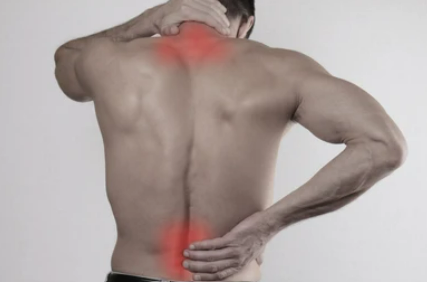
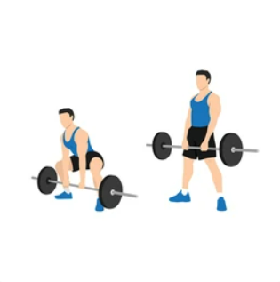
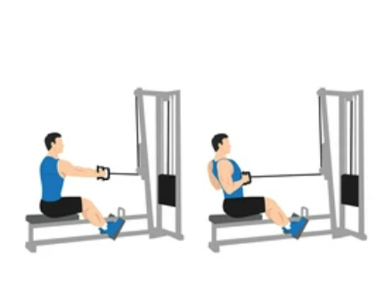
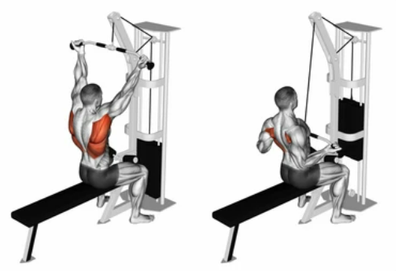
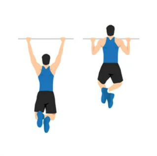
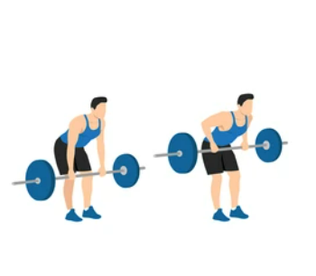

Hrbet
Treniranje hrbta je izjemno pomembno za celovito telesno vadbo in splošno dobro počutje. Hrbet je temeljni del telesa, ki podpira pravilno držo in stabilnost ter omogoča pravilno delovanje ostalih mišičnih skupin. Treniranje hrbta krepi mišice hrbta, vključno s spodnjim, srednjim in zgornjim delom, ter pripomore k izboljšanju telesne drže, preprečevanju bolečin v hrbtu ter zmanjšanju tveganja za poškodbe.

Poleg tega vadba hrbta prispeva k izboljšanju ravnotežja med mišičnimi skupinami telesa, kar lahko vodi do boljšega telesnega videza, močnejšega jedra in večje funkcionalne zmogljivosti. Ne glede na vaše cilje pri vadbi, je pomembno vključiti vaje za hrbet v svoj program treninga, da dosežete uravnoteženo in zdravo telo.
Mrtvi dvig (Deadlift)
Spodnji del hrbta (hrbtič), srednji del hrbta (latissimus dorsi), zadnji del stegenskih mišic (hamstring)

Postavite se pred palico, stopala naj bodo nekoliko širša od širine ramen. Pogrčite se v kolkih, upognite kolena in se sklonite naprej. Držite palico z iztegnjenimi rokami, dlani obrnjene navzdol. Z ravnim hrbtom počasi dvignite palico, s poudarkom na uporabi nog in bokov. Dvignite jo do izravnane drže, nato počasi spustite nazaj na začetno pozicijo.
Veslanje s širokim oprijemom (Wide-Grip Rows)
Srednji del hrbta (latissimus dorsi), zgornji del hrbta (rhomboidi), zadnji del ramenskih mišic (deltoideus)

Stojte pred napravo za veslanje s širokim oprijemom ali vzemite široko ročko na kabelski napravi. Pogrčite kolena, se nagnite naprej, držite ročko z iztegnjenimi rokami. Potegnite ročko proti prsnemu košu, pri tem pa iztegnite komolce in stisnite lopatice skupaj. Počasi spustite ročko nazaj v začetni položaj in ponovite.
Lat pulldown
Srednji del hrbta (latissimus dorsi), zgornji del hrbta (rhomboidi), zadnji del ramenskih mišic (deltoideus)

Sedite na napravo za lat pulldown. Držite vrh široke ročke z iztegnjenimi rokami, dlani obrnjene naprej. Povlecite ročko navzdol proti prsnemu košu, pri tem pa iztegnite komolce in stisnite lopatice skupaj. Počasi spustite ročko nazaj v začetni položaj in ponovite.
Pull-ups (Vlezi)
Srednji del hrbta (latissimus dorsi), zgornji del hrbta (rhomboidi), zadnji del ramenskih mišic (deltoideus)

Visite s palice, dlani obrnjene navzven in rame širine narazen. Počasi potegnite svoje telo navzgor, upogibajte komolce, dokler se brada ne dvigne nad palico. Počasi se spustite nazaj v začetni položaj in ponovite.
Vlečenje z palico(Barbell Rows)
Srednji del hrbta (latissimus dorsi), zgornji del hrbta (rhomboidi), zadnji del ramenskih mišic (deltoideus)

Postavite se pred palico, stopala naj bodo nekoliko širša od širine ramen. Sklonite se naprej, držite palico s širšim oprijemom (rok razmaknjenih malo več kot širina ramen), dlani obrnjene navzdol. Z ravnim hrbtom dvignite palico s tal, pri tem pa upognite komolce in povlecite ramenski del proti prsnemu košu. Osredotočite se na napetost v mišicah hrbta. Počasi spustite palico nazaj proti tlem in ponovite.
Pri začetku novega vadbenega programa je vedno priporočljivo, da se posvetujete s strokovnjakom ali osebnim trenerjem, ki vam bo pomagal prilagoditi vadbo vašim individualnim potrebam in ciljem!
 Močno Telo
Močno Telo